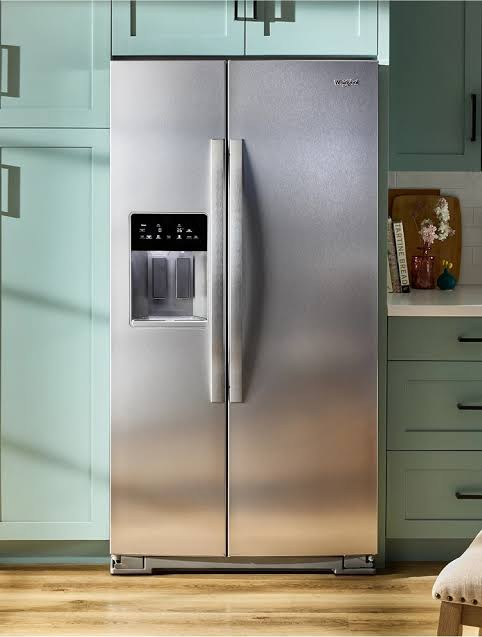
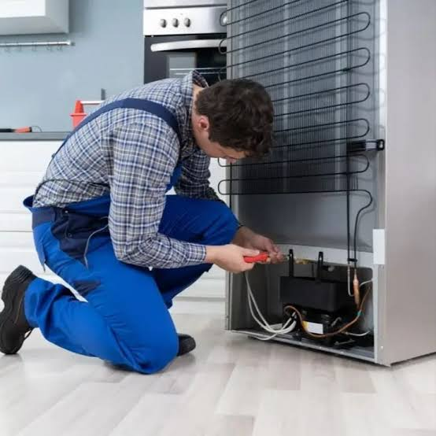
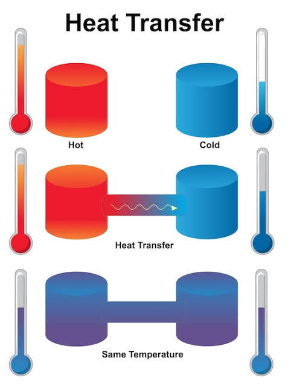
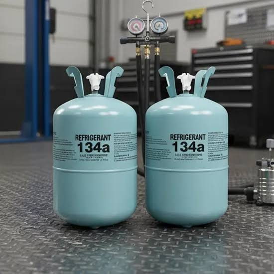
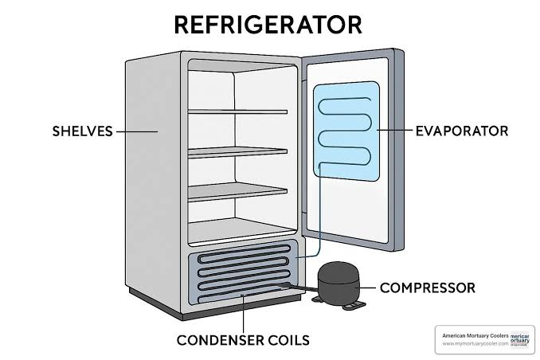
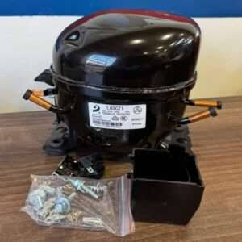
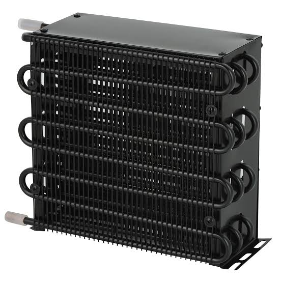
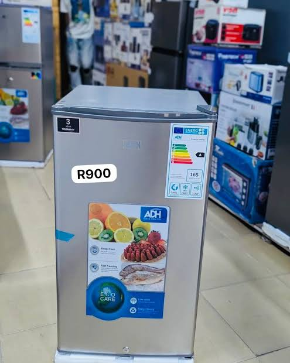
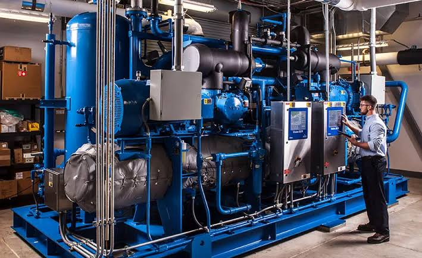
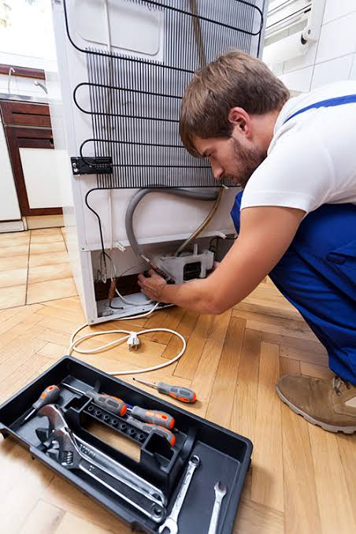

Refrigeration teaches learners how heat is removed from spaces and materials so that food, medicine, and other products remain fresh, safe, and usable for longer periods.
Introduction to Refrigeration
Refrigeration is the branch of technical study that deals with the production and maintenance of low temperatures for cooling and preservation. It is an important subject because many homes, hospitals, shops, hotels, factories, and transport systems depend on refrigeration to keep food, drinks, medicines, and other temperature-sensitive items safe. Without refrigeration, many products would spoil quickly, causing waste, health risks, and financial loss. The subject combines science, engineering, practical skills, and safety practices. A learner of refrigeration must understand how heat moves, how pressure affects gases, and how machines can be designed to remove heat efficiently.
The study of refrigeration begins with understanding the basic need for cooling and the role of temperature control in modern life. It is used in homes through refrigerators and freezers, in businesses through cold rooms and display cabinets, and in industry through processing plants and transport systems. A good refrigeration technician must be patient, careful, and observant because small mistakes in installation or servicing can lead to poor cooling, high energy consumption, or equipment failure. In technical education, refrigeration is valuable because it prepares learners for jobs in maintenance, installation, repair, sales, and entrepreneurship. It also teaches responsibility because refrigeration systems support health and food safety.
Refrigeration helps preserve life, food, medicine, and comfort by controlling temperature with care.
Principles of Refrigeration
The main principle of refrigeration is the removal of heat from one place and its transfer to another. This is achieved by using a refrigerant that changes from liquid to gas and back again under controlled pressure and temperature conditions. When a refrigerant evaporates, it absorbs heat from the space being cooled, and when it is compressed and condensed, it releases that heat elsewhere. This cycle is repeated continuously so that the interior of a refrigerator or cold room stays cool. Understanding this cycle is essential because it explains how refrigeration machines produce cooling.
Learners of refrigeration also study pressure, temperature, and boiling points because these properties determine how a refrigerant behaves in the system. The cooling effect depends on the ability of the refrigerant to take in heat at low pressure and release it at high pressure. The cycle must be carefully designed for the correct performance, energy use, and safety of the equipment. In this subject, students learn that refrigeration is not magic but a practical application of physical principles. This foundation helps them understand repairs, servicing, troubleshooting, and system design.

Refrigeration works by moving heat from where it is unwanted to where it can be safely released.
Heat transfer
Heat transfer is the movement of thermal energy from one object or area to another. In refrigeration, heat move from the inside of the cabinet into the refrigerant, then from the refrigerant into the air outside the system. This transfer occurs through conduction, convection, and radiation. Conduction happens when heat passes through solid materials, convection occurs when heat moves through liquids and gases, and radiation involves heat transfer through space. A refrigeration technician must understand these forms of heat movement because they affect insulation, airflow, and cooling efficiency.
Good insulation is very important because it reduces the amount of heat entering the refrigerated space. If warm air enters the cabinet or cold room through poor seals or thin walls, the refrigeration system must work harder, causing poor performance and high power consumption. Students learn that insulation materials such as foam, fiberglass, or vacuum panels help reduce heat gain. They also learn the importance of door seals, evaporator placement, and airflow design. Proper control of heat transfer makes refrigeration systems more efficient and economical.

Efficient refrigeration depends on controlling heat movement and reducing unwanted heat gain.
Refrigerants
Refrigerants are the working fluids used in refrigeration systems. They absorb heat while evaporating and release heat while condensing. Different refrigerants are used depending on the application, efficiency, environmental impact, and safety requirements. Some refrigerants are common in household refrigerators, while others are used in large industrial plants. The choice of refrigerant is important because it affects cooling performance, energy efficiency, and environmental responsibility. In modern refrigeration, technicians are expected to understand the properties of refrigerants and follow safe handling practices.
Learners also study why refrigerants must be handled carefully. Some refrigerants can be dangerous if released into the atmosphere or if they come into contact with fire or high heat. Others may contribute to environmental damage if they are not managed properly. This is why refrigeration students are taught to work safely, prevent leaks, recover refrigerants, and follow proper disposal methods. Good knowledge of refrigerants helps technicians maintain systems correctly and protect both people and the environment. It also helps them understand the reason for changing old systems to newer and safer alternatives.

Refrigerants are the working medium that makes cooling possible in all refrigeration systems.
Refrigeration Components
A refrigeration system is made up of several important components that work together to produce cooling. These include the compressor, condenser, expansion device, evaporator, and connecting pipes. Each part has a special role in the cycle. The compressor raises the pressure of the refrigerant, the condenser releases heat, the expansion device lowers the pressure, and the evaporator absorbs heat from the cooled space. When these parts are working properly, the system provides steady and efficient cooling. If one part fails, the performance of the whole system may be affected.
Learners study the design, location, and function of each component so that they can understand how the full system operates. They also learn about the importance of clean coils, proper airflow, good electrical connections, and correct refrigerant charge. Refrigeration work is not only about replacing parts but also about understanding how the parts interact. This knowledge is essential for installation, troubleshooting, and repair. In practical technical lessons, students are introduced to these components through diagrams, demonstrations, and supervised hands-on work.

Every refrigeration component plays a specific role in the cooling cycle and the system’s success.
Compressor
The compressor is often called the heart of the refrigeration system because it circulates the refrigerant and increases its pressure. It draws low-pressure vapor from the evaporator and compresses it into a high-pressure vapor that can release heat in the condenser. Without the compressor, the refrigerant would not be able to move through the system properly. The compressor must be selected correctly for the size of the system and the type of refrigerant being used. A faulty compressor can cause poor cooling, unusual noise, overheating, and complete system failure.
Students learn about different types of compressors such as reciprocating, rotary, scroll, and hermetic types. Each type has advantages and limitations depending on cost, reliability, noise level, and cooling capacity. Proper lubrication, electrical supply, and ventilation are essential for compressor performance. The compressor is also one of the most expensive components, so careful servicing and correct installation are necessary. In maintenance work, the technician often checks sound, vibration, temperature, and electrical current to judge the condition of the compressor.

The compressor keeps the refrigeration cycle moving and determines the cooling capacity of the system.
Condenser
The condenser is the part of the system where the refrigerant releases the heat it absorbed from the cooled space. It changes from a high-pressure vapor into a liquid by giving off heat to the surrounding air or water. Condensers are often located at the back of household refrigerators or outside the unit in larger systems. They must be kept clean because dirt and dust reduce heat dissipation and lower performance. A blocked condenser causes higher energy use, poor cooling, and possible breakdowns.
Learners study both air-cooled and water-cooled condensers and understand why each is used. Air-cooled condensers are common in small systems, while water-cooled condensers are used where greater heat removal is required. The technician must also ensure that fans, fins, and tubing are in good condition. Proper condenser performance is necessary for efficient operation and long equipment life. In practical work, cleaning the condenser and checking for airflow faults are common maintenance tasks that greatly improve system efficiency.

A clean and efficient condenser allows the system to reject heat properly and keep cooling steady.
Refrigeration Systems
Refrigeration systems are installed in different sizes and forms depending on the task they are meant to perform. Domestic refrigerators are used in homes to preserve food and drinks, while commercial systems are used in shops, restaurants, cold rooms, and supermarkets. Industrial systems may be much larger and are used for food processing, storage, and transport. Each type of system is designed to meet a particular cooling load, operating time, temperature range, and energy requirement. Understanding the difference between these systems is important for technicians who install, repair, or select equipment.
The study of refrigeration systems also includes the importance of temperature control, fan movement, door sealing, and product loading. In a domestic fridge, air circulation must be good so that all items cool evenly. In a commercial cold room, air distribution and insulation are even more critical because many products are stored at once. Understanding the needs of each type of system helps the technician provide better service and reduce spoilage. This part of the subject links technical knowledge with practical performance and business value.
refrigeration systems">
The right refrigeration system must match the size, purpose, and cooling demand of the job.
Domestic refrigerators
Domestic refrigerators are designed for household use and are commonly found in kitchens and homes. They are used to preserve vegetables, fruits, milk, meat, drinks, and leftovers. Their cooling system is compact but efficient, and they usually operate with a simple cycle of compression, condensation, expansion, and evaporation. A domestic refrigerator must be easy to clean, quiet, reliable, and economical to run. Good design also includes door seals, adjustable shelves, lighting, and temperature control features that make everyday use convenient.
Learners study the common faults in domestic refrigerators such as poor cooling, noisy operation, frosting, water leakage, and electrical faults. These problems often arise from blocked vents, damaged door seals, dirty coils, or low refrigerant charge. Troubleshooting such issues requires careful inspection and a clear understanding of the system. A competent technician must be able to identify the likely cause of the problem before replacing parts. This practical knowledge helps reduce unnecessary cost and improves customer satisfaction.

Domestic refrigerators give families a practical and dependable way to preserve food safely.
Commercial systems
Commercial refrigeration systems are used in supermarkets, hotels, restaurants, hospitals, and food-processing businesses. They are larger, more powerful, and often more complex than domestic units. These systems may include display freezers, cold rooms, ice machines, beverage coolers, and walk-in refrigerators. They must maintain precise temperatures for a wide range of products and often run for long hours. Because of this, their design must focus on reliability, energy efficiency, and ease of maintenance.
Students learn that commercial systems require careful planning, regular inspection, and skilled servicing. The systems may include multiple compressors, fans, controls, sensors, and defrosting arrangements. If any of these parts fail, the stored products may be at risk. Commercial refrigeration is therefore a serious field that demands technical competence and responsibility. It also offers strong career opportunities for learners who enjoy working with equipment, problem-solving, and service delivery. This area of refrigeration combines engineering knowledge with business importance.

Commercial refrigeration supports businesses, food safety, and large-scale storage needs.
Installation and Repairs
Installation of refrigeration systems involves setting up the equipment, connecting refrigerant lines, fixing electrical connections, and testing the performance of the system. A technician must ensure that the unit is level, correctly ventilated, properly insulated, and connected to the correct power supply. The work requires care because poor installation can lead to leaks, inefficient cooling, or equipment failure. Before handing over the system, the technician tests temperature, pressure, and operation so that the customer receives a working and reliable unit.
Repair work involves examining faults, identifying causes, and replacing or repairing defective parts. Common faults include low refrigerant levels, bad thermostats, blocked coils, broken fans, damaged seals, and electrical problems. A good technician follows a clear process of diagnosis, inspection, testing, replacement, and final verification. This method saves time and avoids unnecessary repairs. In refrigeration, proper installation and careful repair are very important because the equipment must protect food, medicine, and other valuable products.

Good installation and confident repair keep refrigeration systems reliable and efficient.
Installation work
Installation work begins with selecting the correct location for the unit and ensuring there is room for airflow and service access. The technician must check the power supply, the building structure, and the surrounding conditions. For large systems, the installation may involve placing the compressor, condenser, evaporator, and pipework in the correct arrangement. For domestic units, the work may be simpler but still requires careful placement and sealing. Good installation affects cooling efficiency, energy use, and the life of the equipment.
After installation, the technician must test the system by checking cooling performance, pressure levels, thermostat operation, and electrical safety. Any fault found at this stage must be corrected before the unit is handed over. The quality of installation often determines whether the system will work smoothly for years. Learners are taught that a well-installed system is not only efficient but also easier to service later. The skill of installation is therefore a foundation of professional refrigeration practice.
Careful installation gives a refrigeration system a strong start and long life.
Maintenance and repair
Maintenance is essential in refrigeration because regular servicing keeps the system clean, efficient, and dependable. Routine actions include cleaning coils, checking seals, inspecting fans, testing thermostats, and verifying refrigerant levels. Maintenance also involves looking for signs of wear such as noise, vibration, or poor cooling. When such signs are noticed early, the technician can prevent more serious breakdowns. In many workplaces, preventive maintenance saves cost and protects important stored goods.
Repair work often involves replacing damaged parts, correcting wiring faults, fixing leaks, or restoring proper airflow. The technician must be methodical and careful because refrigeration systems are sensitive and sometimes dangerous if handled incorrectly. Clear records of maintenance and repairs help users understand the history of the equipment and plan future service. Learners are taught that repair is not just about replacing parts but also about restoring full performance and safety. This responsibility makes the refrigeration trade both practical and respected.
Good maintenance prevents breakdowns and keeps refrigeration systems safe and efficient.
Safety and Careers
Safety is very important in refrigeration because the work involves electricity, pressure, sharp tools, and sometimes hazardous refrigerants. A refrigeration technician must wear protective clothing, handle tools carefully, switch off equipment before servicing, and follow safe working procedures. Proper ventilation is also necessary when working with refrigerants or cleaning chemicals. Safety practices protect the technician, the customer, and the equipment. In technical training, learners are taught that careless behaviour can create injury, damage, or environmental harm.
Refrigeration also offers many career opportunities. A learner may become a refrigeration technician, air-conditioning technician, maintenance engineer, service supervisor, sales technician, or entrepreneur. The skill is useful in homes, offices, hospitals, hotels, and industries. It also offers opportunities for self-employment, especially in repair and servicing businesses. Studying refrigeration develops practical skills, problem-solving ability, discipline, and responsibility. For learners who enjoy technology, precision, and hands-on work, refrigeration can be a rewarding and future-focused career.
Safe and skilled refrigeration work creates dependable systems and strong career opportunities.
Safety practice
Safety practice in refrigeration means following correct procedures before starting any job. Technicians should check electrical connections, wear insulated gloves when necessary, and avoid touching hot or pressurized components without care. They should also recover refrigerants properly, label systems clearly, and keep the workplace clean and organized. Good housekeeping reduces accidents and makes maintenance easier. Safety practices are part of professional training because a careless technician can create serious risks for themselves and others.
The study of safety also includes understanding the hazards of poor ventilation, improper storage of refrigerant cylinders, and electrical shock. Learners are taught to read instructions, inspect the equipment, and seek help when unsure. These habits show professionalism and help prevent expensive mistakes. In the refrigeration trade, safety is not optional; it is a core part of every task. A safe technician builds trust and becomes more reliable in the workplace.
Safety practice protects lives, equipment, and the quality of refrigeration work.
Career opportunities
The refrigeration industry offers many career opportunities for learners with technical skills and good work habits. Some people become service technicians, some work in installation teams, and others grow into supervisors, engineers, or business owners. The need for refrigeration services continues because homes, industries, shops, and public institutions all rely on cooling systems. This makes the trade stable and relevant in modern life. Skilled technicians can work locally or internationally, and many also find opportunities in related areas such as air-conditioning and cold-room maintenance.
Studying refrigeration also develops valuable life skills such as teamwork, accuracy, problem-solving, and responsibility. These skills help learners in many aspects of life and future work. A good refrigeration technician does more than fix machines; they protect food, support businesses, and keep essential products safe. That is why the subject is valuable for students who want practical knowledge and a strong future. It is a career path that brings both personal growth and useful service to the community.
Refrigeration creates practical careers that support health, business, and everyday comfort.